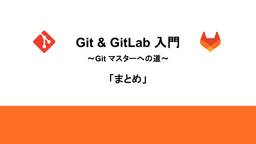
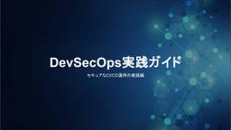
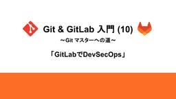

SIOS Tech. Lab
https://tech-lab.sios.jp
サイオステクノロジーのエンジニアが クラウド、OSS、認証に関する様々な情報を提供します。
フィード

Git & GitLab 入門 ～Git マスターへの道～「まとめ」
SIOS Tech. Lab
ここでは、連載形式で公開してきた「Git & GitLab入門」シリーズの記事へのリンクとともに、各回の概要を整理します。 Gitの基本とGitLab / GitHubについて バージョン管理の基盤となるGitの ...Git & GitLab 入門 ～Git マスターへの道～「まとめ」 first appeared on SIOS Tech. Lab.
2日前
生成AIの学術利用を加速する!!勉学に励む学生を優しくサポートするMoodle対応のMCPサーバーを作りました!!
SIOS Tech. Lab
はじめに 昨今、生成AIが流行っているのは言うまでもありません。ChatGPTから始まり、そしてRAG（Retrieval Augmented Generation）と呼ばれる技術が注目され、さらにAIエージェントなんて ...生成AIの学術利用を加速する!!勉学に励む学生を優しくサポートするMoodle対応のMCPサーバーを作りました!! first appeared on SIOS Tech. Lab.
2日前

DevSecOps実践ガイド：セキュアなCI/CD運用の実践編
SIOS Tech. Lab
はじめに 前回の記事では、GitLabとOpenShift、Gatekeeperを組み合わせたDevSecOpsモデルケース環境の構築方法を紹介しました。 本記事では、それらを組み合わせて閉域環境 ...DevSecOps実践ガイド：セキュアなCI/CD運用の実践編 first appeared on SIOS Tech. Lab.
2日前
DevSecOps実践ガイド：CI/CD環境の構築編
SIOS Tech. Lab
はじめに 前回までに、GitLabとOpenShift、Gatekeeperを閉域環境で構築する手順を紹介しました。 本記事では、その環境を基盤としてGitLabのプロジェクト作成や設定を追加し、CI/CDパイプラインと ...DevSecOps実践ガイド：CI/CD環境の構築編 first appeared on SIOS Tech. Lab.
3日前

Git & GitLab 入門 (10) ～Git マスターへの道～「GitLabでDevSecOps」
SIOS Tech. Lab
はじめに 前回までは、GitとGitLabの具体的な機能や操作方法を入門者向けに解説してきました。 今回は、GitLabの根幹となる「DevSecOps」という考え方を中心に解説します。近年のソフトウェア開発では、開発の ...Git & GitLab 入門 (10) ～Git マスターへの道～「GitLabでDevSecOps」 first appeared on SIOS Tech. Lab.
3日前

知っておくとちょっと便利！nftables によるパケットフィルタリング1
SIOS Tech. Lab
/br今号では、nftables について、その仕組みや設定方法について説明します！ nftables とは nltables とはパケットフィルタリング (通過するパケットの IPアドレス、プロトコル、ポート番号などを ...知っておくとちょっと便利！nftables によるパケットフィルタリング1 first appeared on SIOS Tech. Lab.
6日前

【2025年9月】OSSサポートエンジニアが気になった！OSS最新ニュース
SIOS Tech. Lab
こんにちは！ 今月も「OSSのサポートエンジニアが気になった！OSSの最新ニュース」をお届けします。 9/10、IPA (情報処理推進機構) が、「情報セキュリティ白書2025」PDF 版を公開しました。 プレス発表「情 ...【2025年9月】OSSサポートエンジニアが気になった！OSS最新ニュース first appeared on SIOS Tech. Lab.
6日前
GitLabの冗長化構成を徹底解説：安定運用のための実践ガイド
SIOS Tech. Lab
はじめに これまで本ブログでは、GitLabをDevSecOpsのための開発プラットフォームとして利用する際に必要となる主要機能（コンテナレジストリやCI/CD）について紹介してきました。今回はその基盤をより安定して運用 ...GitLabの冗長化構成を徹底解説：安定運用のための実践ガイド first appeared on SIOS Tech. Lab.
6日前

GitLab CI/CD 実践［応用編］：共通設定と外部ファイルの利用
SIOS Tech. Lab
はじめに 前回の記事では、2回にわたりGitLab CI/CDの基本的なパイプライン作成方法 を解説しました。ジョブの定義からステージの構成まで、一通りの流れを実際に試しながら理解できたと思います。 しかし、実際にチーム ...GitLab CI/CD 実践［応用編］：共通設定と外部ファイルの利用 first appeared on SIOS Tech. Lab.
9日前
マイクロサービス化の新旧課題の解決策を提案するホワイトペーパーの紹介
SIOS Tech. Lab
本書は、2025年8月に公開したマイクロサービス化の課題とその解決策に関するホワイトペーパーを紹介するものです。 「ビジネスの変化に柔軟かつスピーディーに対応するためのマイクロサービス化だったはずが、なぜか開発は遅くなり ...マイクロサービス化の新旧課題の解決策を提案するホワイトペーパーの紹介 first appeared on SIOS Tech. Lab.
9日前